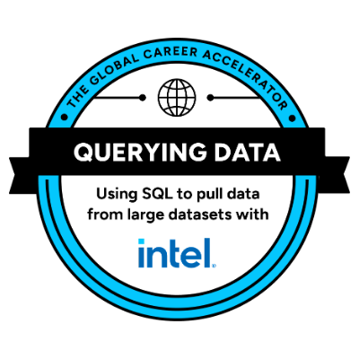

sdr / bdr · analytics · bilingual EN/ES
I start the conversations that build pipeline.
International Business student at CU Denver (Business Analytics minor) with 4,200+ cold calls behind me. I bring SQL and Python to prospecting so I know who to call before I pick up the phone.

tech sales internship
My pipeline, start to finish
Full-cycle top-of-funnel work: finding the right accounts, getting them on the phone, and handing qualified meetings to account executives.
Outbound funnel
source: HubSpotBars show funnel stage, not scale.
Sales Development Intern
[Company] · [Dates]
- Placed 4,200+ cold calls, generating 256 connects at a 7.8% connect-to-meeting rate
- Booked 20 meetings and ran 8 intros for account executives, with one advancing into a full product demo
- Prospected companies and individual contacts using HubSpot and ZoomInfo
- Logged outreach and kept CRM records clean in HubSpot
selected work
The analytical side
Projects where I dug into the data, found what mattered, and turned it into a recommendation someone could act on.
Intel: Sustainability Impact Analysis
Wrote SQL queries across Intel's global repurposing program. Found that older devices save 2.5x more energy per unit, and that routing laptops to Asia produces the highest CO₂ return.
Grammy Awards: Website Performance
Used Python to analyze traffic before and after a 2022 domain split. Found the split created two distinct audience profiles with different engagement patterns.
ESPN: "Know The Feeling"
Social-first campaign to grow ESPN's prime-time NFL audience with younger viewers, built on creator partnerships and short-form content.
about
A little more about me
I'm an International Business student at CU Denver with a 3.9 GPA and a minor in Business Analytics. This past spring I interned with the Downtown Denver Partnership, doing GIS-based economic analysis on 300+ commercial properties and working directly with brokers and property managers to improve data accuracy. Before that I spent two years at Chatham University building a foundation in global markets, accounting, and statistics.
My background is a pretty weird but useful mix of things: geospatial analysis, managing lifeguard teams, volunteering in the Dominican Republic and British Virgin Islands, and building websites from scratch. It all comes back to the same thing though. I like figuring out how messy situations work and making them work better. I'm bilingual in English and Spanish and active in FAM and ALPFA at CU Denver.
Lately I've been exploring how data and strategy play out across finance, consulting, economic development, and client solutions. I'm drawn to roles where analytical thinking and people skills both matter.
toolkit
What I work with
Sales tools on one side, data tools on the other, and the languages to talk to both.
sales
data
people
certifications
Credentials
Project-based programs through Global Career Accelerator.

Let's talk pipeline.
Hiring for SDR or BDR? I'd like to hear about your team.